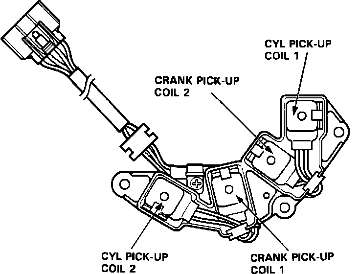

Crankshaft Position Sensor: Description and Operation
Crank/cyl Sensors:

The Cylinder Sensor detects the position of the No. 1 cylinder for the sequential fuel injection to each cylinder and ignition timing. This sensor is made up of a single-lobed cylinder trigger rotor and a cylinder pick-up coil. The magnetic cylinder sensor produces an alternating current. A Voltage signal is produced by the windings around the sensor magnet and sent to the ECU. This system utilizes two Cylinder sensors. The Cylinder sensors are located on the left cylinder head, behind the timing belt sprocket.